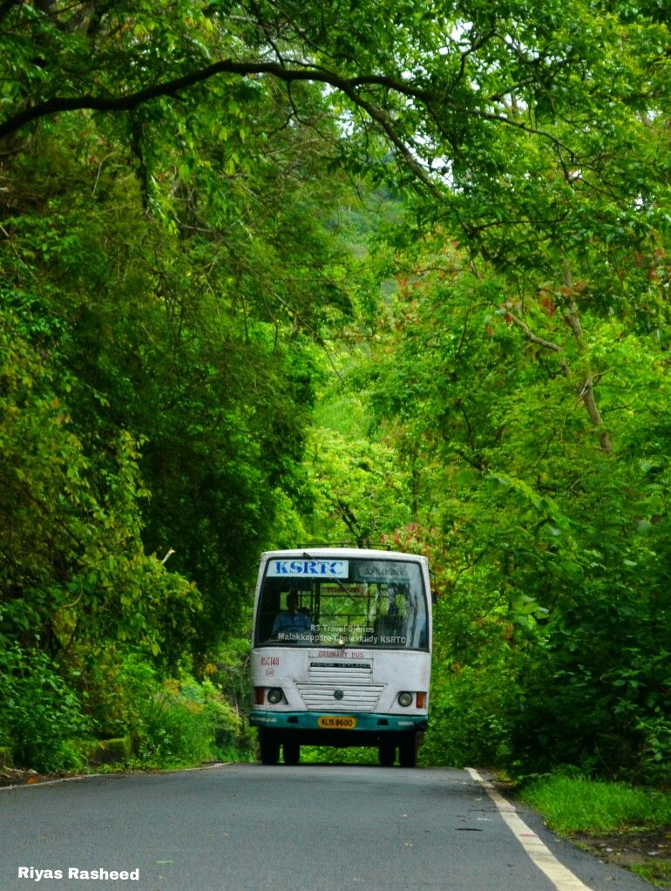

KASARGOD

Kasaragod is located 50 km south of the major port city & a commercial hub Mangalore and 364 km north of the major port city Kochi.
Kasaragod district has the maximum number of rivers in Kerala - 12.[7] The town is located on the estuary where the Chandragiri River,
which is also the longest river in the district, empties into Arabian Sea.
Kasaragod is home to several forts which include Arikady fort, Bekal Fort, Chandragiri Fort, and Hosdurg Fort. Bekal Fort is also the largest
fort in Kerala. Talakaveri, which is home to Talakaveri Wildlife Sanctuary where the 805 km long Kaveri River originates, is located closer
to Ranipuram in Kerala-Karnataka border.
Parappa Wildlife Sanctuary
Kasaragod, India
A paradise for nature lovers and a fine ranked in the list of tourist places in Kasaragod. It is a natural habitat of some underrated fauna like a slow turtle, the prickly porcupine, Malabar hornbill, Slender loris, and the cute wild jungle cat.
If wilderness attracts you, this locale is a must visit for some great wildlife photography.